Lecture 5: Advanced Features in Tableau
STA1000 - Data Analytics and Metrics
Previously …
- In Lecture 4 we made figures clear and honest, then prepared the table behind them in Tableau: a pivot, calculated fields, and two files merged into one data source.
Today, three questions:
- How does Tableau handle dates and locations?
- How do you make a figure interactive?
- How do you turn your figures into a dashboard where they work together?
1. Date and Location Types in Tableau
Space and Time Variables
So far, two types of variables:
- Categorical, made of characters: the Dimensions in Tableau
- Continuous, made of numbers: the Measures in Tableau
Tableau has special features for two more types: Date variables, with a calendar icon, and Location variables, with a globe icon.
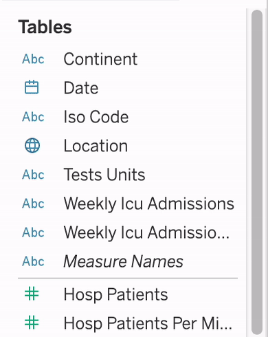
Date Type Variables
A date refers to a specific time: any combination of year, month, day, hour, minute and second.
“March 23, 1984”, “03/23/84”, “23/03/1984” and “1984-03-23” have different formats but refer to the same date. Lecture 2: insist on YYYY-MM-DD (ISO 8601), which sorts correctly.
In insta-data.csv, posted_at (2025-01-08 20:00:00) should come in as a Date & Time, with a calendar icon. If it shows Abc or #, click the icon and choose Date & Time.
Line and Area Charts
A date usually goes on Columns, the X axis, to show how another variable changes over time.
The other variable goes on Rows, with a statistical aggregation: SUM by default, but COUNT, AVERAGE or MEDIAN are in the menu of the pill.
Tableau starts with the YEAR: click the + on the date pill to go down to the quarter, the month, the day.
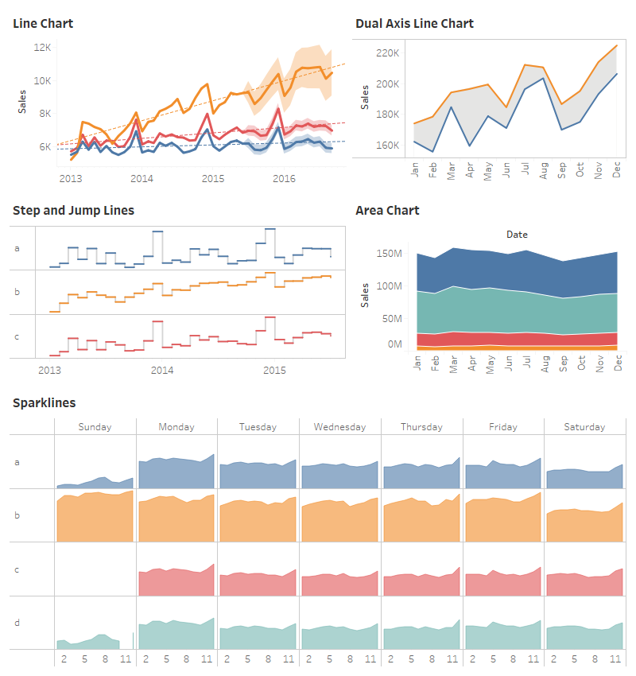
One Date, Three Levels
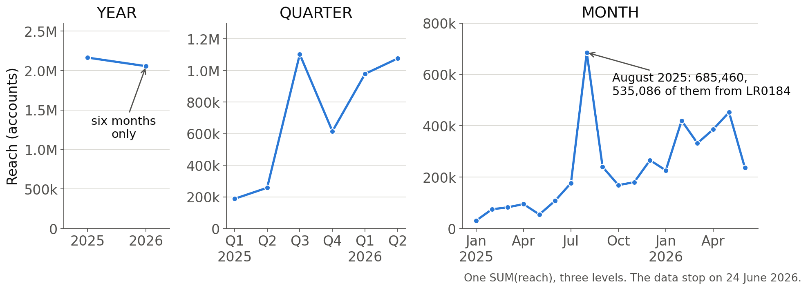
The same SUM(reach) tells three stories. By year, 2026 looks like a decline, but it has only six months. By quarter, one quarter stands out. By month, it is one month, and mostly one post: Lecture 3’s reel. Check the level before you read the line.
Date Parts or Date Values?
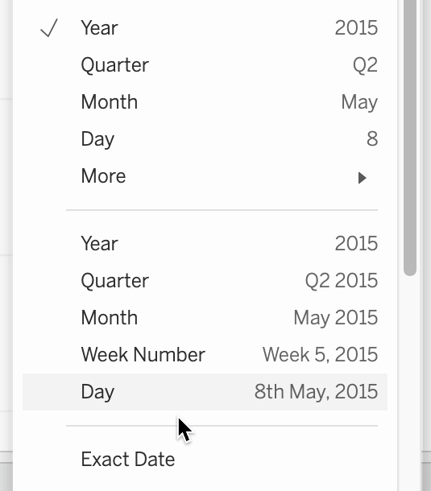
The menu of a date pill ( right-click / ⌃ Control + click) has two lists:
Date parts, at the top: “May” means every May, whatever the year. The pill is blue, discrete.
Date values, below: “May 2015” means that month only. The pill is green, continuous: a timeline.
Exact Date keeps the full date and time of every row.
Two Measures, One Chart
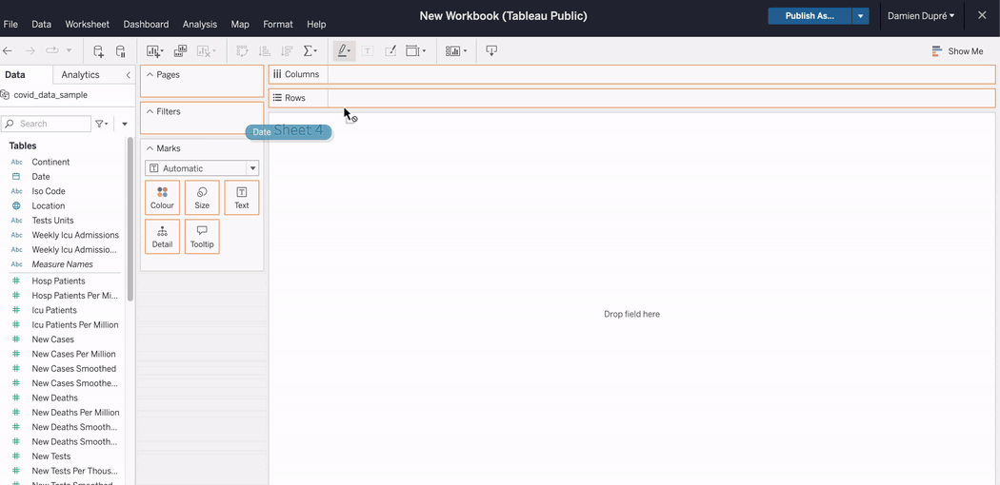
- Drag a second measure onto Rows, next to the first: two charts, one above the other
- Open the menu of the second pill → Dual Axis: one chart, with a second axis on the right
The recordings in this lecture use a Covid-19 sample: the clicks are the same with your own data.
Synchronise the Axes
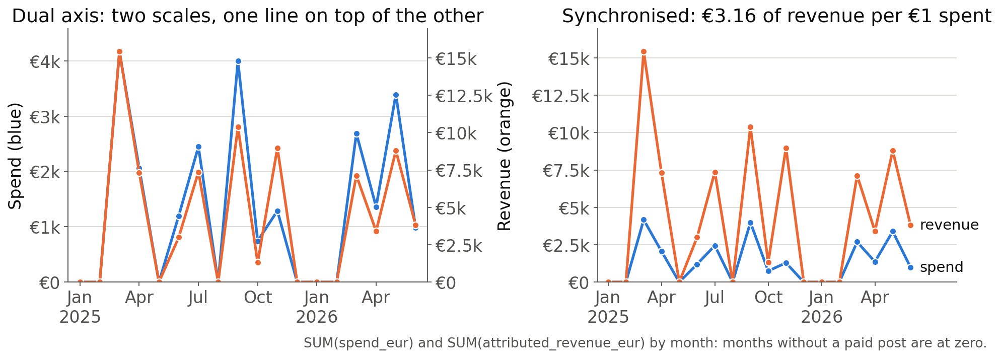
With Dual Axis, each measure keeps its own scale: €4,170 of spend and €15,425 of revenue are drawn at the same height, the trick of Lecture 4’s Nicolas Cage chart. When both measures share a unit, open the menu of the right axis → Synchronise Axis.
Your Turn!
Loomrow over time
With insta-data.csv:
- Check that
posted_athas a calendar icon reachby month: which month peaks? Which Lecture 3 post explains it?spend_eurandattributed_revenue_eurby month on a synchronised dual axis: how much revenue per euro spent?
Location Type Variables
A list of geographical places: continents, countries, regions, counties, cities, postcodes …
A location variable should come in with a globe icon. If it shows Abc (text) or # (numbers, e.g., postcodes), click its icon → Geographic Role → Country/Region, City, …

Mapping with Tableau
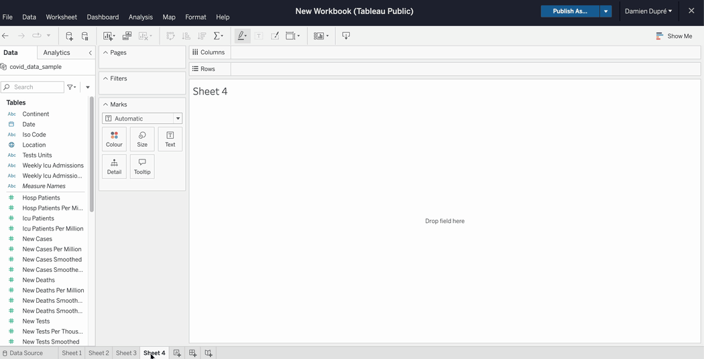
- Put the location variable on Columns or Rows, then open Show Me: Tableau generates the Latitude and Longitude
- Choose a symbol map, where each place is a point (good for cities), or a filled map, where each place is filled with colour (not for cities)
- Put another variable on Colour or Size
Filled or Symbol Map?
Lecture 4: land doesn’t vote, people do. A filled map gives the most ink to the largest area, whatever its value.
- A count (purchases, spend, followers): a symbol map, with the count on Size
- A rate (return on ad spend, conversion rate): a filled map, with the rate on Colour
Maps are easy in Tableau: make one only when geography changes a decision.
A Second File, With Countries
insta-data.csv has no location, but Meta Ads Manager breaks the results of the 127 paid posts down by country: ads-by-country.csv, one row per post and country.
| post_id | country | amount_spent_eur | purchases | purchase_value_eur |
|---|---|---|---|---|
| LR0040 | Ireland | 202.33 | 8 | 877.84 |
| LR0040 | United Kingdom | 59.64 | 1 | 104.24 |
| LR0042 | Ireland | 93.82 | 5 | 507.76 |
| LR0042 | United Kingdom | 44.71 | 1 | 96.47 |
- Merge it with a relationship on
post_id, as in Lecture 4: each table keeps its own rows - Check the totals:
SUM(amount_spent_eur)is €24,345.78, thespend_eurofinsta-data.csv - With a join, each paid post appears once per country:
SUM(spend_eur)jumps to €106,899.36
Your Turn!
Map Loomrow’s ads
From Loop, download ads-by-country.csv, then with insta-data.csv:
- Relate the two files on
post_id, and check the totals countryshould have a globe icon: a symbol map ofpurchases. Where do the sales come from?- A filled map of the return on ad spend,
SUM([Purchase Value Eur]) / SUM([Amount Spent Eur]): where does a euro go furthest? - Belgium and Italy: how many purchases behind them?
2. Interactive Customisations in Tableau
Aliases
An alias renames the categories a variable displays. Only the labels change: the original values are kept for the calculations.
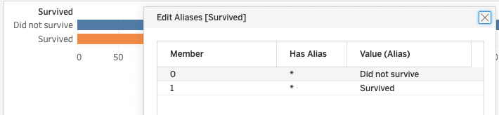
In the Data pane, open the menu of a Dimension ( right-click / ⌃ Control + click) → Aliases…. Here, in a Titanic dataset, the 0 and 1 of Survived now read Did not survive and Survived.
Tooltips
The tooltip is the box that appears when the cursor hovers over, or clicks on, a mark.
It gives the actual numbers behind the figure, and tells a short story about what is currently seen.
Edit it from Tooltip on the Marks card. Fields between < > change with the mark under the cursor.
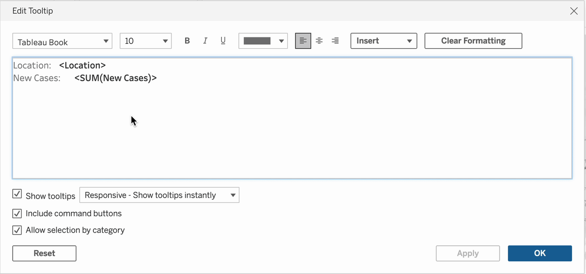
Write the Tooltip as a Sentence
Default, on reach by month:
Month of Posted At: August 2025
Reach: 685,460Rewritten:
In <MONTH(Posted At)>,
<CNTD(Post Id)> posts reached
<SUM(Reach)> accounts. The best
one alone: <MAX(Reach)>.Shows:
In August 2025, 26 posts reached 685,460 accounts. The best one alone: 535,086.
To use a field that is not in the view, drag it onto Tooltip on the Marks card, then set its aggregation from the menu of its pill: Count (Distinct) for post_id, Maximum for reach.
A Figure in the Tooltip
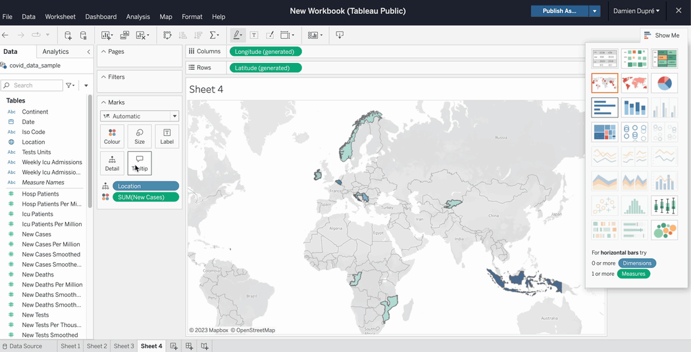
Instead of a value, a tooltip can show a whole figure: in the tooltip editor, Insert → Sheets → the sheet to show. Hover a country, and its own time series appears. With Loomrow: hover a month, and see its reach by format.
Filters
Show only specific data with the Filters shelf: drag a variable onto it, then choose which categories to keep (Dimension) or which range of values (Measure).

Filter and Highlighter Menus
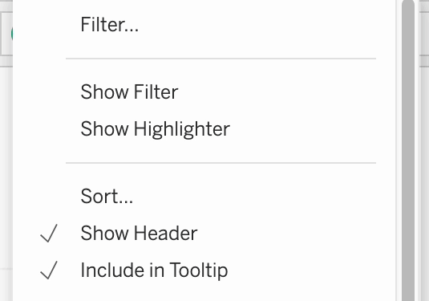
A menu lets the reader make their own selection. Open the menu of a pill in the view:
- Show Filter: keeps the selected values and removes the others
- Show Highlighter: keeps every value and dims the ones not selected
Customise each card from its own drop-down arrow: list, drop-down, slider, …
Filter or Highlight?
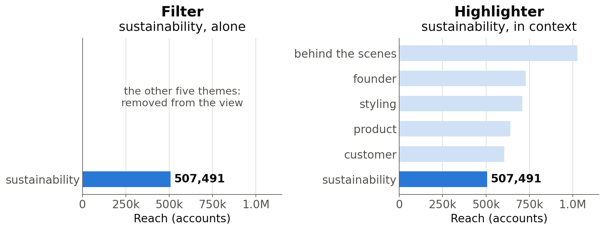
The filter leaves sustainability alone: 507,491 accounts, but is that a lot? The highlighter keeps the other themes, dimmed: sustainability is the lowest of the six.
Filter when the rest of the data does not matter, highlight when the comparison with the rest does.
Time Animation Player
Put a date on the Pages shelf: the view becomes a series of pages, one per month (or year, or day), with playback controls to play them in a row.

Tick Show History to keep the marks of the previous pages on screen. With Loomrow: impressions against likes, and posted_at as a month on Pages.
Your Turn!
Make your figures smart
On your Loomrow sheets:
- Alias
is_paid: False as Organic, True as Paid - Rewrite the tooltip of
reachby month as a sentence reachbytheme: a filter ontheme, then a highlighter. Select customer in each: where does it rank?- Your scatterplot, by month on Pages: press play
3. Tableau Dashboard
Tableau Dashboard Showcase
Federica Pinza’s visualisation, DCU winner of the 2024 European Data Visualisation Challenge organised by EDHEC
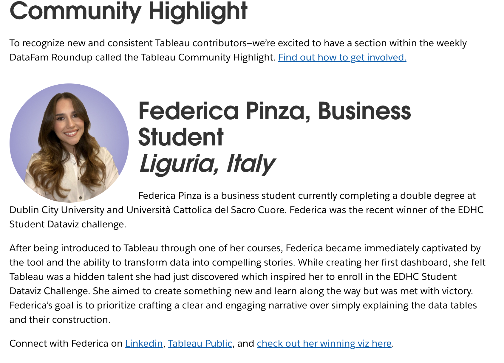
Tableau Dashboard Showcase
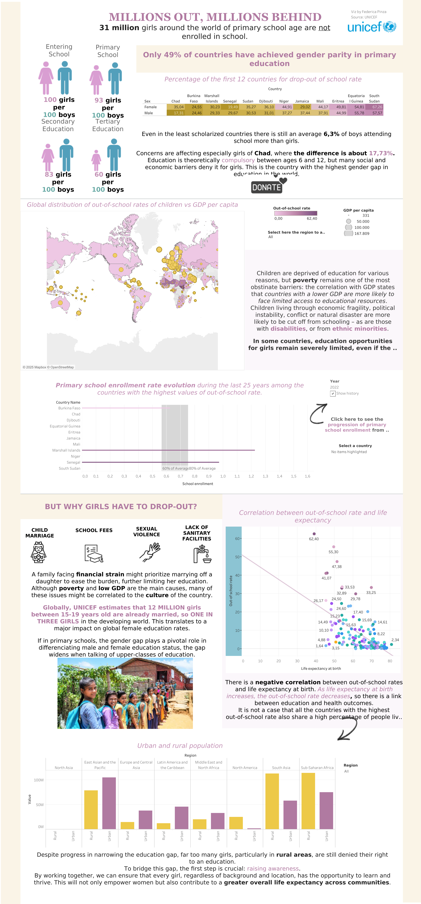
One long page, read from top to bottom:
- a headline and the key numbers
- a map, a trend and a correlation
- the causes, explained with icons and text
- a conclusion with a call to action
Nice Interactions and Design
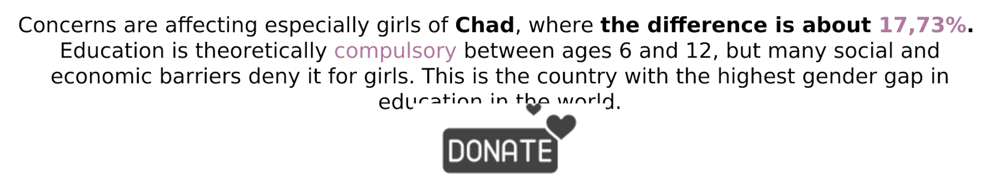
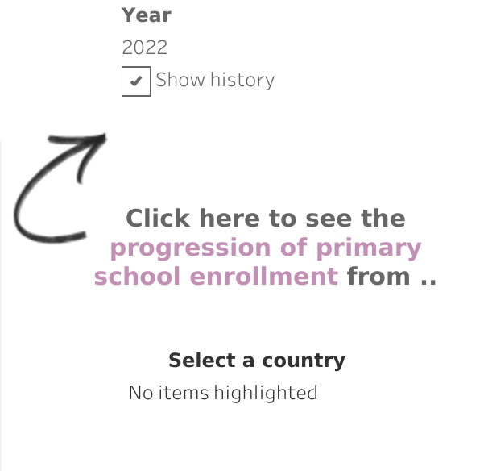
Meaningful Visualisations
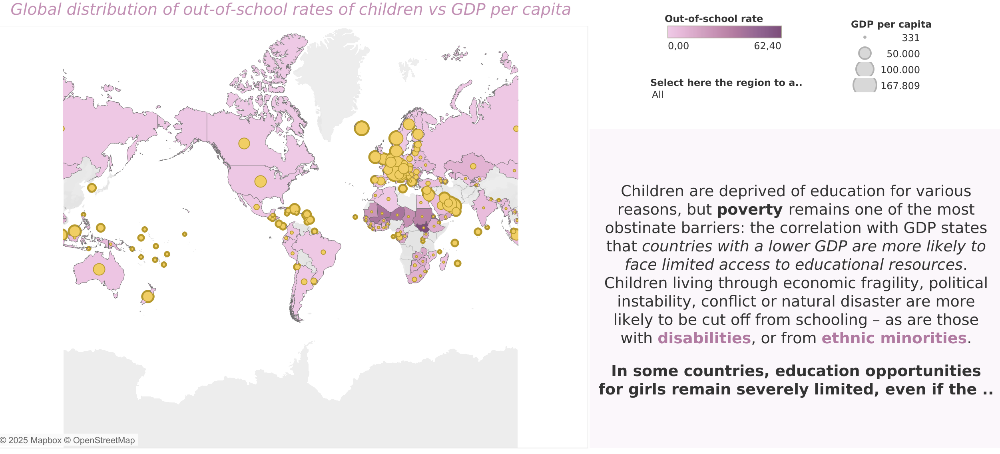
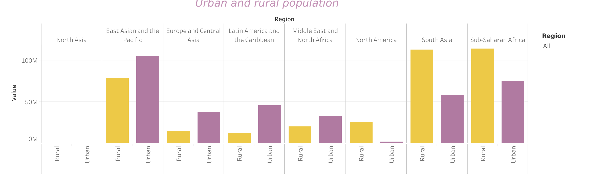
Insightful Storytelling
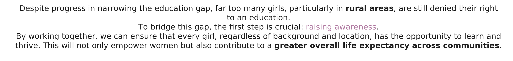
Example Not to Follow!
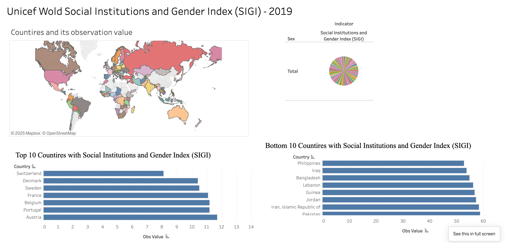
- Typos in the titles: “Wold”, “Countires”
- One colour per country on the map, and a pie with one slice per country: the colours carry no information
- Raw field names as axis titles (“Obs Value”), two different fonts, and two bar charts on different scales
- No text to say what the index measures, or what to conclude
Design Strategy
Creating a perfect Tableau dashboard is easy if you follow these steps:
- Basic figures: create many figures that can support your story, and leave them with all their default parameters
- Basic dashboard: put the most relevant figures in a dashboard, with its title, text and pictures, but no design work yet
- Figure improvement: go back to the worksheet of each figure and customise it: colour, size, shapes, title, captions, axes and interactions
- Dashboard improvement: go back to the dashboard and customise it: background, colours, fonts, layout and actions
Tableau Dashboard
A dashboard is made by dropping several sheets on a page, organising their position, and adding objects (text, images, blank space, …).
Design features can then be changed to give the dashboard a professional feel.
Interactions that make all the sheets move together come with step 4: the dashboard actions.
Tableau Dashboard
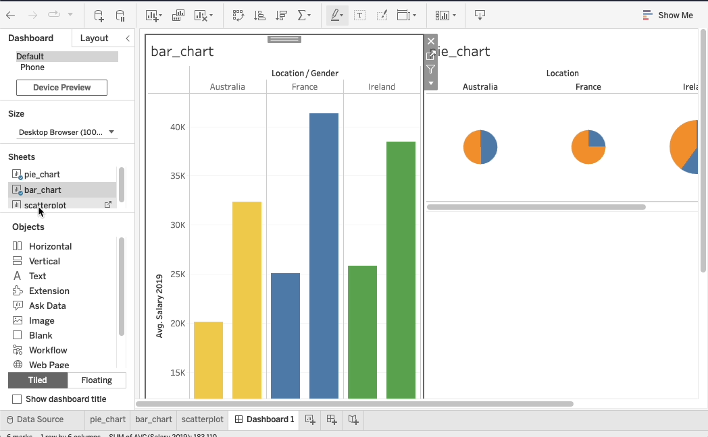
Drag the sheets from the left panel onto the page. Tiled keeps them in a tidy grid; Floating lets an object sit on top of the others.
Dashboard Actions
On a dashboard, a highlighter already works on every sheet with the same variable, but a filter only on its own sheet (to extend it: its menu on the Filters shelf → Apply to Worksheets → All Using This Data Source). Actions go further: they make all the figures react together.
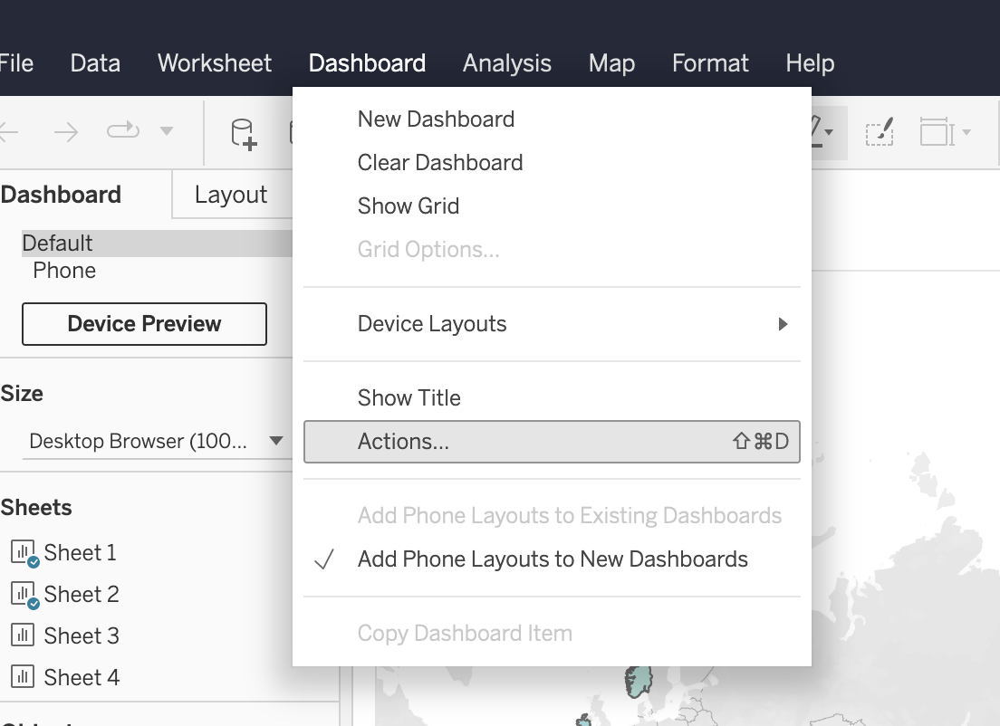
Dashboard → Actions… → Add Action, then choose:
- what triggers it: Hover, Select (a click) or Menu
- which sheet it comes from
- which sheets it changes
A Highlight action on Hover is the easiest way to make a dashboard smart. A Filter action on Hover or Select changes the figures under the reader’s eyes: prefer Menu.
Your Turn!
Your Loomrow dashboard
Four sheets, two from Lecture 3 and two from today:
- Composition: percent of posts by
format - Comparison: box plots of
reachbyformat - Time:
reachby month - Map: return on ad spend by
country
Titles that state the finding, and a text box: which format should Loomrow post more of, and why?
Then two actions: a Highlight on Hover from the composition sheet, and a Filter on Menu from the map. Start now, finish at home.
Publish
Publishing saves a dashboard online, for everybody to open. In Tableau Public in the browser, publishing is saving: Publish As…, top right.
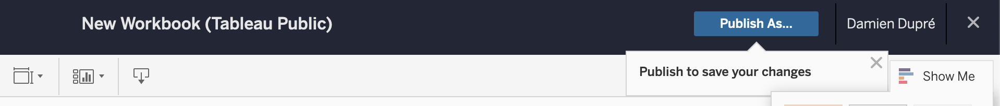
Everything you publish is public, the data included.
On the published page, Share gives the link; Download gives an image, a PDF, or the workbook with its data (.twbx).
For your assignment, publish your dashboard and submit its URL on Loop.
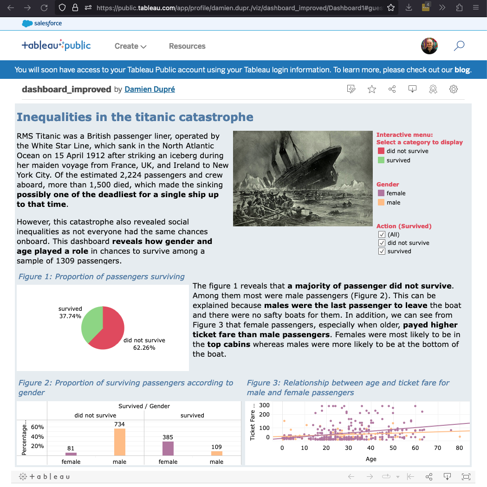
4. Assignment 1 Brief
Assignment Instructions
Context
You are the marketing analyst at an international company, just hired. Instagram is effectively the label’s whole top of the funnel, and the founders want to know what 18 months of posts tell them.
Task
With the data you will receive by email, tell a story (i.e., a narrative) behind the data in ONE Tableau dashboard, ending with a recommendation.
Submission
Submit the URL of your Tableau Public dashboard on the STA1000 Loop page. Deadline: November 22nd at 12pm midday
Tableau Objective
Obtain the highest mark in Assignment 1
- Use Tableau Public, and submit the link to a Dashboard (not a Story)
- Work on each of the four assessment criteria (25% each):
- Creativity: menus, filters and interactions that do something
- Analytical depth: figures that answer a question worth asking
- Design: layout, colour, typography, restraint
- Overall story: title, narrative, and a conclusion with a recommendation
- Get inspired by existing dashboards on Tableau Public
Get Inspired
Past challenges are an excellent way to see outstanding dashboards:
- Google Big Data Viz Challenge (2012)
- Do Good Data Viz Challenge (2016)
- Women in Analytics Data Viz Competition
- Data Visualization Society, State of the Industry Challenge
- Iron Viz, Tableau’s own championship


Thanks for your attention and don’t hesitate to ask if you have any questions!